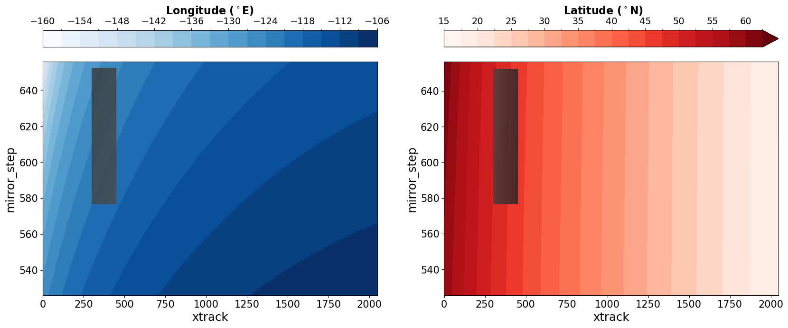

Access Near-Real-Time (NRT) Air Quality Data from TEMPO#
Nitrogen dioxide Level 2 (PROVISIONAL) files provide trace gas information at TEMPO’s native spatial resolution, ~10 km^2 at the center of the Field of Regard (FOR), for individual granules. Each granule covers the entire North-South TEMPO FOR but only a portion of the East-West FOR. Source: NASA Earthdata.
Requirements#
EDL authentication (username/password)
pydap>=3.5.9.
Objectives#
Subset a remote file#
a) By Variables
b) By Spatial selection
Subset multiple remote files#
Stream subset of data
References#
Liu, X. (2025). TEMPO NO2 tropospheric, stratospheric, and total columns V04 [Data set]. NASA Langley Atmospheric Science Data Center Distributed Active Archive Center. https://doi.org/10.5067/IS-40E/TEMPO/NO2_L2.004
import xarray as xr
import datetime as dt
import earthaccess
import pydap
import matplotlib.pyplot as plt
# import pydap-specific tools
from pydap.net import create_session
from pydap.client import get_cmr_urls, open_url
from pydap.client import to_netcdf as dap_to_netcdf
import numpy as np
Finding OPeNDAP URLs#
Query opendap urls using NASA’s CMR API#
We are interested in TEMPO NO2 tropospheric and stratospheric columns V04 data. This collection provides hourly data for level 2 data, considered Near Real Time (NRT).
TEMPO_L2_NRTNO2_ccid = "C3685896872-LARC_CLOUD" #
time_range = [dt.datetime(2025, 10, 1), dt.datetime(2025, 10, 7)] # One month of data
bounding_box = [-124.63309,46.35932, -121, 49.83307] # WSEN area within Seattle PNW
cmr_urls = get_cmr_urls(ccid=TEMPO_L2_NRTNO2_ccid, bounding_box=bounding_box, time_range=time_range, limit=1000) # you can incread the limit of results
print("################################################ \n We found a total of ", len(cmr_urls), "OPeNDAP URLS!!!\n################################################")
################################################
We found a total of 73 OPeNDAP URLS!!!
################################################
cmr_urls[:5]
['https://opendap.earthdata.nasa.gov/collections/C3685896872-LARC_CLOUD/granules/TEMPO_NO2_L2_V04_20251001T141426Z_S004G08.nc',
'https://opendap.earthdata.nasa.gov/collections/C3685896872-LARC_CLOUD/granules/TEMPO_NO2_L2_V04_20251001T151426Z_S005G08.nc',
'https://opendap.earthdata.nasa.gov/collections/C3685896872-LARC_CLOUD/granules/TEMPO_NO2_L2_V04_20251001T161426Z_S006G08.nc',
'https://opendap.earthdata.nasa.gov/collections/C3685896872-LARC_CLOUD/granules/TEMPO_NO2_L2_V04_20251001T171426Z_S007G08.nc',
'https://opendap.earthdata.nasa.gov/collections/C3685896872-LARC_CLOUD/granules/TEMPO_NO2_L2_V04_20251001T181426Z_S008G08.nc']
EDL Authentication via earthaccess and OPeNDAP#
You can authenticate via earthaccess as demonstrated below. You must have a valid EDL account. There are two strategies for authenticating with earthaccess:
strategy="interactive". This will promt your edl username-password.strategy="netrc". Use this if the notebook is running on an environment where a.netrcwith your credentials is recoverable. T
Below the default will be netrc, assuming the user has executed the notebook Authenticate.ipynb. If not, you can change the strategy to "interactive".
from earthaccess.exceptions import LoginStrategyUnavailable
try:
auth = earthaccess.login(strategy="netrc", persist=True) # you will be promted to add your EDL credentials
except LoginStrategyUnavailable:
auth = earthaccess.login(strategy="interactive", persist=True)
# pass Token Authorization to a new Session.
my_session = session=auth.get_session()
Accessing Metadata-ONLY with PyDAP#
We can access OPeNDAP-produced metadata to identify the variables of interest. In particular those associated with latitude and longitude values
Below need to request the DAP4 metadata from the remote server.
%%time
pyds = open_url(cmr_urls[0],protocol="dap4", session=my_session)
pyds.tree()
.TEMPO_NO2_L2_V04_20251001T141426Z_S004G08.nc
├──product
│ ├──main_data_quality_flag
│ ├──vertical_column_troposphere
│ ├──vertical_column_stratosphere
│ └──vertical_column_troposphere_uncertainty
├──geolocation
│ ├──time
│ ├──longitude
│ ├──latitude
│ ├──solar_azimuth_angle
│ ├──longitude_bounds
│ ├──solar_zenith_angle
│ ├──viewing_zenith_angle
│ ├──latitude_bounds
│ ├──relative_azimuth_angle
│ └──viewing_azimuth_angle
├──support_data
│ ├──surface_pressure
│ ├──wind_speed
│ ├──amf_cloud_pressure
│ ├──vertical_column_total_uncertainty
│ ├──vertical_column_total
│ ├──terrain_height
│ ├──fitted_slant_column_uncertainty
│ ├──amf_troposphere
│ ├──fitted_slant_column
│ ├──gas_profile
│ ├──fitted_slant_column_uncorrected
│ ├──amf_cloud_fraction
│ ├──snow_ice_fraction
│ ├──amf_diagnostic_flag
│ ├──destriping_correction
│ ├──albedo
│ ├──amf_total
│ ├──scattering_weights
│ ├──tropopause_pressure
│ ├──eff_cloud_fraction
│ ├──amf_stratosphere_clear_sky
│ ├──pbl_height
│ ├──amf_total_clear_sky
│ ├──temperature_profile
│ ├──amf_stratosphere
│ ├──amf_troposphere_clear_sky
│ ├──scattering_weights_clear_sky
│ └──ground_pixel_quality_flag
├──qa_statistics
│ ├──fit_rms_residual
│ └──fit_convergence_flag
├──xtrack
└──mirror_step
CPU times: user 102 ms, sys: 5.25 ms, total: 107 ms
Wall time: 735 ms
dims = list(set(pyds['geolocation/latitude'].dims + pyds['geolocation/longitude'].dims + pyds['geolocation/time'].dims))
print("\nnecessary dimensions to download:", dims, "\n")
necessary dimensions to download: ['/mirror_step', '/xtrack']
Subset by Variable Names#
First we explore only the coordinate and their dimensions, to identify spatial subset.
output_path = "data/"
Stream data#
Each remote file is stored into an individual file. No data aggregation
%%time
dap_to_netcdf(cmr_urls, session=my_session,
keep_variables= dims + [
"/geolocation/time",
"/geolocation/longitude",
"/geolocation/latitude",
],
output_path=output_path)
CPU times: user 125 ms, sys: 249 ms, total: 374 ms
Wall time: 11.8 s
Inspect all downloaded files#
Here, we further identify the subset of data needed on the remote file, that will return ONLY data within our bounding box, for any possible variable of interest.
%%time
# Use coord data from Bounding Box
minLon, maxLon = bounding_box[0], bounding_box[2]
minLat, maxLat = bounding_box[1], bounding_box[3]
slices = []
# iterate over all downloaded files
# Will use the URL to extract the filename
for url in cmr_urls:
filename = output_path+f"{url.split('/')[-1][:-3]}.nc4"
# Flatten data
ds = xr.merge([xr.open_dataset(filename), xr.open_dataset(filename, group='geolocation')])
ds.load()
# Identify subset from Lon/Lat data per granule
longitude = ds['longitude'].values
latitude = ds['latitude'].values
mask = (
(longitude >= minLon) & (longitude <= maxLon) &
(latitude >= minLat) & (latitude <= maxLat)
)
rows, cols = np.where(mask)
# indexes below
y0, y1 = rows.min(), rows.max()
x0, x1 = cols.min(), cols.max()
slice_ = {
"mirror_step":(y0,y1),
"xtrack": (x0,x1),
}
slices.append({
"mirror_step":(y0,y1),
"xtrack": (x0,x1),
})
CPU times: user 475 ms, sys: 134 ms, total: 609 ms
Wall time: 639 ms
Visualize Coordinates#
Will need to mask arrays for visualizing,
Plot only the last granule
Lon = ds['longitude'].isel(mirror_step=slice(y0, y1), xtrack=slice(x0, x1))
Lon_masked = xr.full_like(ds['longitude'], np.nan)
Lon_masked.loc[dict(
mirror_step=Lon['mirror_step'],
xtrack=Lon['xtrack']
)] = Lon
Lat = ds['latitude'].isel(mirror_step=slice(y0, y1), xtrack=slice(x0, x1))
Lat_masked = xr.full_like(ds['latitude'], np.nan)
Lat_masked.loc[dict(
mirror_step=Lat['mirror_step'],
xtrack=Lat['xtrack']
)] = Lat
fig, axes = plt.subplots(figsize=(20,8), ncols=2)
pbar_lon = ds['longitude'].plot(ax=axes[0], cmap="Blues", vmin=-160, vmax=-105, levels=np.arange(-160,-105,3), cbar_kwargs={"location": "top"})
pbar_lon.colorbar.ax.tick_params(labelsize=14)
pbar_lon.colorbar.set_label(r'Longitude ($^\circ$E)', fontsize=16, weight='bold')
Lon_masked.plot(ax=axes[0], cmap="Greys_r",vmin=-160,vmax=20, add_colorbar=False, alpha=0.8)
# Optional: Set limits if not automatically handling it
axes[0].set_xlim([ds['xtrack'].min(),ds['xtrack'].max()])
axes[0].set_ylim([ds['mirror_step'].min(),ds['mirror_step'].max()])
pbar_lat = ds['latitude'].plot(ax=axes[1], vmin=15, vmax=62.5, levels=20, cmap='Reds',cbar_kwargs={"location": "top"})
pbar_lat.colorbar.ax.tick_params(labelsize=14)
pbar_lat.colorbar.set_label(r'Latitude ($^\circ$N)', fontsize=16, weight='bold')
Lat_masked.plot(ax=axes[1], cmap="Greys_r",vmin=40,vmax=90, add_colorbar=False, alpha=0.8)
plt.setp(axes[0].get_xticklabels(), fontsize=15)
plt.setp(axes[0].get_yticklabels(), fontsize=15)
axes[0].set_xlabel('xtrack', fontsize=17.5)
axes[0].set_ylabel('mirror_step', fontsize=17.5)
plt.setp(axes[1].get_xticklabels(), fontsize=15)
plt.setp(axes[1].get_yticklabels(), fontsize=15);
axes[1].set_xlabel('xtrack', fontsize=17.5)
axes[1].set_ylabel('mirror_step', fontsize=17.5)
plt.show()

Now define all variables to download#
Vars = dims + [
"/product/main_data_quality_flag",
"/product/vertical_column_troposphere",
"/product/vertical_column_stratosphere",
"/geolocation/time",
"/geolocation/longitude",
"/geolocation/latitude",
"/support_data/wind_speed",
"/support_data/terrain_height",
"/support_data/gas_profile",
"/support_data/pbl_height",
"/support_data/temperature_profile",
]
Download data#
At this moment, need to erase any previously downloaded TEMPO_NO2_L2_* data
to avoid filename collision
import os
import glob
fnames = [output_path+f"{fname.split('/')[-1][:-3]}.nc4" for fname in cmr_urls]
for filename in fnames:
try:
os.remove(filename)
except FileNotFoundError:
print(f"The file '{filename}' is not in there anymore")
%%time
dap_to_netcdf(cmr_urls, session=my_session,
keep_variables = Vars,
dim_slices= slices,
output_path=output_path)
CPU times: user 104 ms, sys: 311 ms, total: 414 ms
Wall time: 14.8 s
local_file = output_path+cmr_urls[0].split("/")[-1][:-3]+".nc4"
dst = xr.open_datatree(local_file)
dst
<xarray.DataTree>
Group: /
│ Dimensions: (xtrack: 150, mirror_step: 76)
│ Coordinates:
│ * xtrack (xtrack) int32 600B 299 300 301 302 303 ... 444 445 446 447 448
│ * mirror_step (mirror_step) int32 304B 970 971 972 973 ... 1043 1044 1045
│ Attributes: (12/38)
│ tio_commit: 482bb1eedf3be832ea377a03017f20b435365760
│ product_type: NO2
│ processing_level: 2
│ processing_version: 4
│ sdpc_version: TEMPO_SDPC_v4.7.0
│ scan_num: 4
│ ... ...
│ collection_shortname: TEMPO_NO2_L2
│ collection_version: 1
│ keywords: EARTH SCIENCE>ATMOSPHERE>AIR QUALITY>NI...
│ summary: Nitrogen dioxide Level 2 files provide ...
│ coremetadata: \nGROUP = INVENTORYMET...
│ history: 2025-10-01T16:37:46Z:/tempo/nas0/sdpc_s...
├── Group: /support_data
│ Dimensions: (mirror_step: 76, xtrack: 150, swt_level: 72)
│ Dimensions without coordinates: swt_level
│ Data variables:
│ wind_speed (mirror_step, xtrack) float32 46kB ...
│ terrain_height (mirror_step, xtrack) float32 46kB ...
│ gas_profile (mirror_step, xtrack, swt_level) float32 3MB ...
│ pbl_height (mirror_step, xtrack) float32 46kB ...
│ temperature_profile (mirror_step, xtrack, swt_level) float32 3MB ...
├── Group: /product
│ Dimensions: (mirror_step: 76, xtrack: 150)
│ Data variables:
│ main_data_quality_flag (mirror_step, xtrack) float32 46kB ...
│ vertical_column_troposphere (mirror_step, xtrack) float64 91kB ...
│ vertical_column_stratosphere (mirror_step, xtrack) float64 91kB ...
└── Group: /geolocation
Dimensions: (mirror_step: 76, xtrack: 150)
Data variables:
time (mirror_step) datetime64[ns] 608B ...
longitude (mirror_step, xtrack) float32 46kB ...
latitude (mirror_step, xtrack) float32 46kB ...